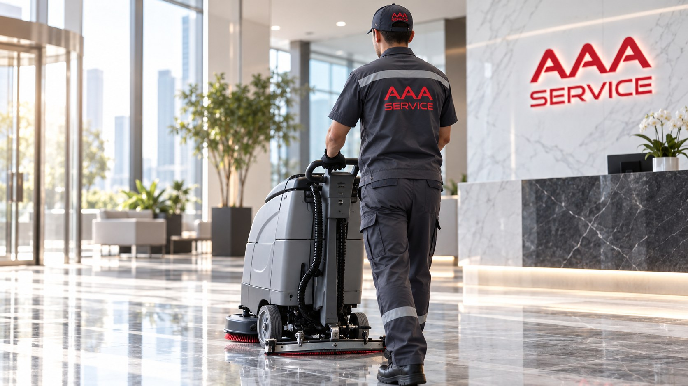
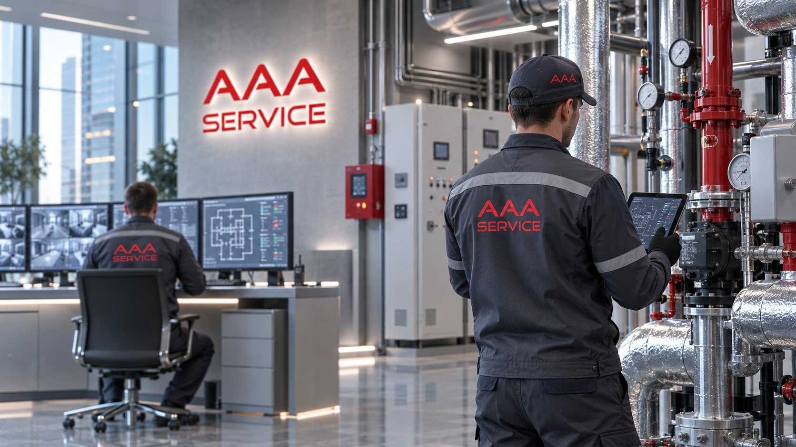
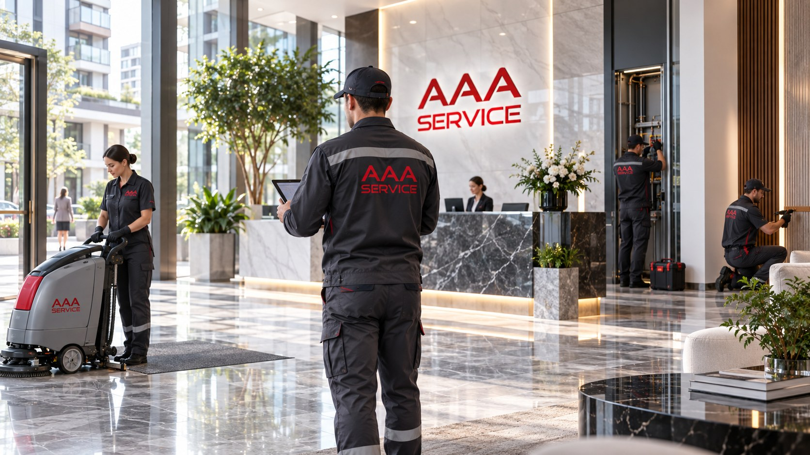
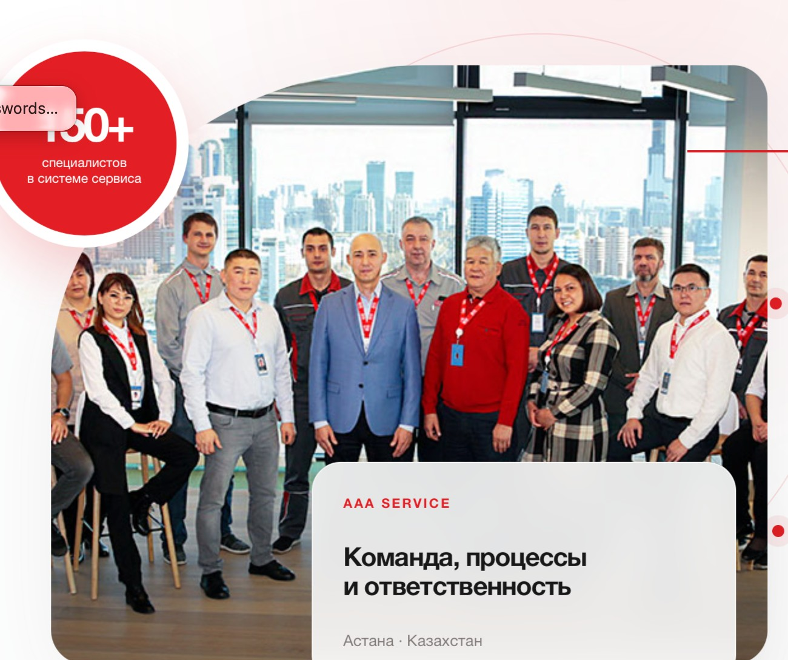

Больше, чем клининг.
Мы управляем комфортом
Комплексное обслуживание зданий и инфраструктуры — от чистоты и инженерных систем до ежедневной эксплуатации объекта.
Полный цикл обслуживания объекта
Не набор разрозненных подрядчиков, а единая система: специалисты, процессы, контроль качества и прозрачная ответственность.

Профессиональная уборка
Ежедневный, генеральный, послестроительный клининг и деликатная химчистка.
Подробнее →
Инженерное сопровождение
Круглосуточный контроль инженерных сетей, оборудования и систем безопасности.
Подробнее →
Комплексное управление
Берём на себя эксплуатационные, хозяйственные и организационные задачи.
Подробнее →
Команда, которой доверяют
AAA SERVICE выстраивает работу вокруг дисциплины, профессиональной подготовки и контроля качества — от ежедневных задач до сложных эксплуатационных ситуаций.
Технологии в каждой детали
Системы здания работают как единый организм. Наша задача — видеть состояние объекта целиком и реагировать до того, как мелкая неисправность станет проблемой.
Сервис, который можно контролировать
Мы объединяем людей, оборудование и стандарты работы в понятную для клиента систему.
Профессиональная репутация
Работа с казахстанскими и международными компаниями, а также частными клиентами.
Контроль качества
Оценка всех этапов работ и понятная ответственность за результат.
Гибкий подход
Состав услуг и процессы подбираются под специфику конкретного объекта.
Прозрачная смета
Клиент понимает структуру затрат и может отслеживать расходование средств.
Специализированная техника
Профессиональное оборудование и качественные расходные материалы.
Готовность реагировать
Для инженерных задач предусмотрено круглосуточное сопровождение.
Сервис начинается с понимания объекта
Не предлагаем одинаковый сценарий всем. Состав работ формируется под инженерную инфраструктуру, режим эксплуатации и требования конкретного объекта.
Обследование
Понимаем состав помещений, систем и эксплуатационных рисков.
Регламент
Формируем понятную программу обслуживания и зоны ответственности.
Работа
Выполняем клининговые, инженерные и хозяйственные задачи.
Контроль
Проверяем качество и корректируем процессы по фактической нагрузке.
Давайте обсудим ваш объект
Подберём состав услуг под тип недвижимости, режим эксплуатации и требуемый уровень сервиса.